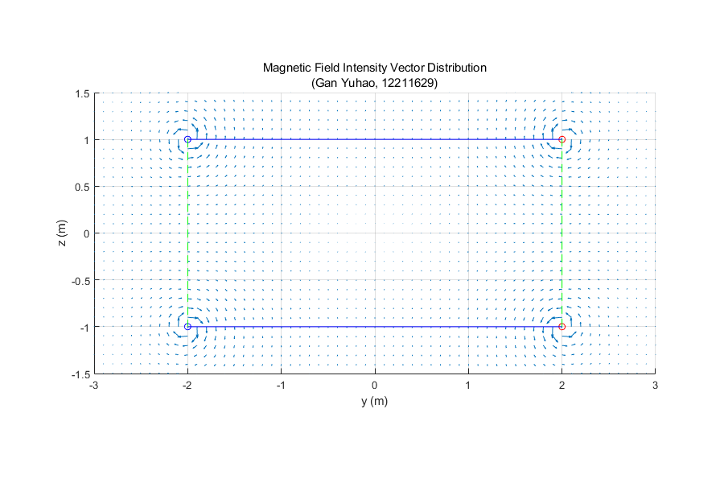
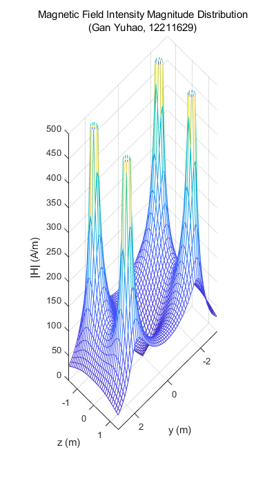
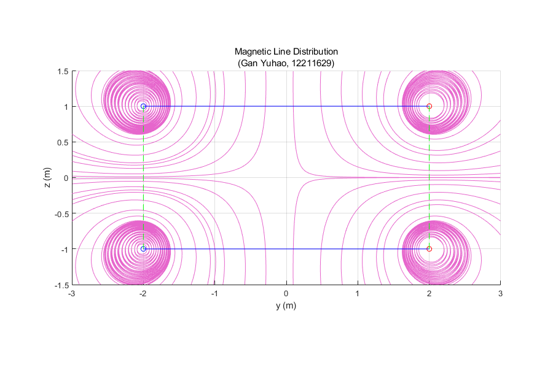

Contents
Initialization
clear; clc;
Declarations
Basic Parameters
a = 2; % m I = 500; % A d = 2; % m % Scene segment_number = 50; segment_length = 2 * pi * a / segment_number; angles = linspace(0, 2 * pi, segment_number); % Viewport sampling_density = 10; length_y = 6; length_z = 3; sampling_number_y = sampling_density * length_y + 1; sampling_number_z = sampling_density * length_z + 1; range_y = linspace(-length_y / 2, length_y / 2, sampling_number_y); range_z = linspace(-length_z / 2, length_z / 2, sampling_number_z);
Magnetic Field Intensity Vector Distribution
Hy = zeros(sampling_number_y, sampling_number_z); Hz = zeros(sampling_number_y, sampling_number_z); % Iterate the mesh points for it_y = 1 : sampling_number_y for it_z = 1 : sampling_number_z % Obtain real position of the mesh point P = [0, ... (it_y - 1) / sampling_density - length_y / 2, ... (it_z - 1) / sampling_density - length_z / 2]; % Iterate the loops for S_z = [-d / 2, d / 2] % Iterate the segments for S_angle = angles(1 : segment_number) % Obtain the position of current segment S = [a * cos(S_angle), a * sin(S_angle), S_z]; % Obtain the displacement R = P - S; % Obtain the differential length dL = [-segment_length * sin(S_angle), segment_length * cos(S_angle), 0] * sign(S_z); % Apply Biot–Savart Law dH = cross(I .* dL, R) ./ (4 .* pi .* norm(R) .^ 3); % Accumulate Hy(it_y, it_z) = Hy(it_y, it_z) + dH(2); Hz(it_y, it_z) = Hz(it_y, it_z) + dH(3); end end end end % Plot the figure figure(1); grid on, axis equal, hold on; [mesh_y, mesh_z] = meshgrid(range_y, range_z); quiver(mesh_y, mesh_z, Hy', Hz'); plot(a, d / 2, 'ro', -a, d / 2, 'bo', a, -d / 2, 'ro', -a, -d / 2, 'bo'); plot([a, -a], [d / 2, d / 2], 'b-', [-a, -a], [d / 2, -d / 2], 'g--', [-a, a], [-d / 2, -d / 2], 'b-', [a, a], [-d / 2, d / 2], 'g--') axis([-length_y / 2, length_y / 2, -length_z / 2, length_z / 2]); set(gcf, 'Position', [50, 50, 900, 600]); title(["Magnetic Field Intensity Vector Distribution", "(Gan Yuhao, 12211629)"]); xlabel("y (m)"), ylabel("z (m)"); saveas(1, "Magnetic Field Intensity Vector Distribution 2","png");
Magnetic Field Intensity Magnitude Distribution
H_norm = sqrt(Hy .^ 2 + Hz .^ 2); % Plot the figure figure(2); grid on, axis equal, hold on; [mesh_y, mesh_z] = meshgrid(range_y, range_z); mesh(mesh_y, mesh_z, H_norm'); axis([-length_y / 2, length_y / 2, -length_z / 2, length_z / 2, 0, 500]); set(gcf, 'Position', [50, 50, 400, 700]); view([3, 3, 200]); title(["Magnetic Field Intensity Magnitude Distribution", "(Gan Yuhao, 12211629)"]); xlabel("y (m)"), ylabel("z (m)"), zlabel("|H| (A/m)"); saveas(2, " Magnetic Field Intensity Magnitude Distribution 2" , "png");
Magnetic Line Distribution
Sample the magnitude of H
H_samples_range_y = [-a, a]; H_samples_z = d / 2; H_samples_index_y = floor((H_samples_range_y(1) + length_y / 2) * sampling_density) : floor((H_samples_range_y(2) + length_y / 2) * sampling_density); H_samples_index_z = floor((length_z / 2 + H_samples_z) * sampling_density); H_samples = H_norm(H_samples_index_y, H_samples_index_z); % Calculate PDF & CDF H_pdf = H_samples ./ sum(H_samples); H_cdf = zeros(1, length(H_pdf)); H_cdf(1) = H_pdf(1); for it = 2 : length(H_pdf) H_cdf(it) = H_cdf(it - 1) + H_pdf(it); end % Sample basing on PDF & CDF line_number = 28; line_start_y = zeros(1, line_number); line_start_z = zeros(1, line_number); uniform_samples = linspace(0.012, 0.99, line_number); for it_u = 1 : line_number u = uniform_samples(it_u); if u < H_cdf(1) left = 0; right = H_samples_range_y(1); else for it_s = 1 : (length(H_cdf) - 1) if u >= H_cdf(it_s) && u < H_cdf(it_s + 1) delta = (H_samples_range_y(2) - H_samples_range_y(1)) / length(H_cdf); left = H_samples_range_y(1) + delta * (it_s - 1); right = H_samples_range_y(1) + delta * it_s; end end end line_start_y(it_u) = (left + right) / 2; line_start_z(it_u) = H_samples_z; end % Plot the figure figure(3); grid on, axis equal, hold on; [mesh_y, mesh_z] = meshgrid(range_y, range_z); fig_sl = streamline(mesh_y, mesh_z, -Hy', -Hz', line_start_y, line_start_z); set(fig_sl, "lineWidth", 0.4, "color", [0.9, 0.4, 0.8]); fig_sl = streamline(mesh_y, mesh_z, Hy', Hz', line_start_y, line_start_z); set(fig_sl, "lineWidth", 0.4, "color", [0.9, 0.4, 0.8]); fig_sl = streamline(mesh_y, mesh_z, -Hy', -Hz', line_start_y, -line_start_z); set(fig_sl, "lineWidth", 0.4, "color", [0.9, 0.4, 0.8]); fig_sl = streamline(mesh_y, mesh_z, Hy', Hz', line_start_y, -line_start_z); set(fig_sl, "lineWidth", 0.4, "color", [0.9, 0.4, 0.8]); plot(a, d / 2, 'ro', -a, d / 2, 'bo', a, -d / 2, 'ro', -a, -d / 2, 'bo'); plot([a, -a], [d / 2, d / 2], 'b-', [-a, -a], [d / 2, -d / 2], 'g--', [-a, a], [-d / 2, -d / 2], 'b-', [a, a], [-d / 2, d / 2], 'g--') axis([-length_y / 2, length_y / 2, -length_z / 2, length_z / 2]); set(gcf, 'Position', [50, 50, 900, 600]); title(["Magnetic Line Distribution", "(Gan Yuhao, 12211629)"]); xlabel("y (m)"), ylabel("z (m)"); saveas(3, "Magnetic Line Distribution 2" , "png");